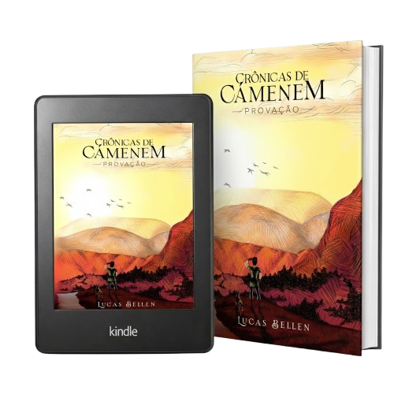

Provação
(Crônicas de Cámemem - Primeiro Volume)

Ler sinopse
Em um universo onde reinos medievais e cavaleiros ainda existem, lendas sobre atos de heroísmo e bravura em combate propiciam ascensão e glória para aqueles suficientemente ousados para persegui-las. Um jovem com um passado sombrio e repleto de ânsias sobre o futuro, Rafael, leva a vida na capital do reino de Cámemem com entusiasmo, sob a tutela de um experiente ferreiro, que o instrui a respeito da própria profissão. Tendo sonhado com a grandeza desde pequeno e disposto a enfrentar condições desfavoráveis e superar traumas do passado, ele decide participar do torneio de justas da Ordem dos Paladinos, uma competição que seleciona e promove o melhor entre os duelistas para ingressar em suas fileiras. Ao mesmo tempo, Martim, outro jovem de mesma idade, é confrontado pela mãe após se recusar a passar os restos de seus dias em uma instituição religiosa, para seguir os passos do pai, a quem admira e toma por exemplo. Ambos são envolvidos em uma crise política que tem início após o rei de Cámemem, Garibaldi, sofrer um atentado à luz do dia. A suspeita do ataque recai sobre o império de Santai, ao norte, que há mais de cem anos encontra-se em paz com seus vizinhos. Conectados, precisarão resolver os conflitos que os unem, bem como empenhar esforços a fim de evitar que uma guerra sem precedentes seja travada entre Cámemem e Santai, gigante no continente, cujo poderio desperta o temor de todas as nações ao seu redor.